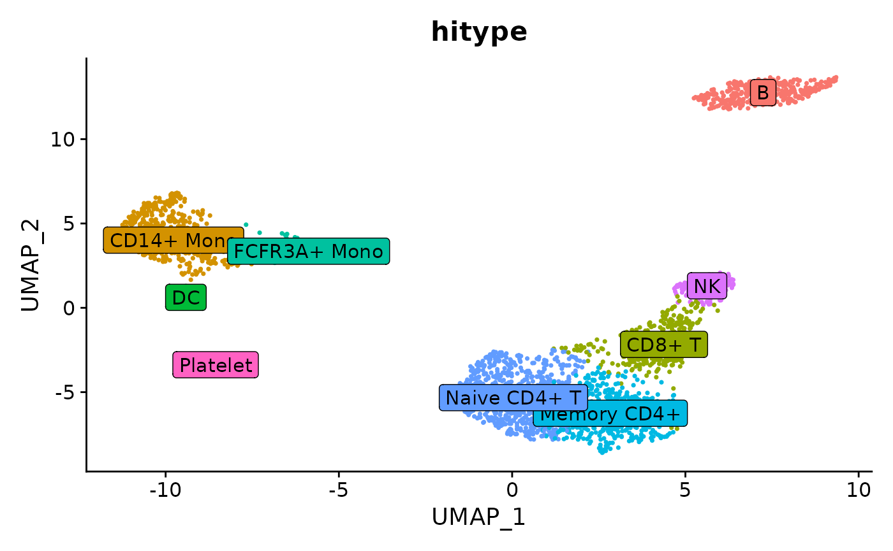

Calculate cell type scores and assign cell types
calculate-cell-type-scores-and-assign-cell-types.Rmd
library(hitype)
#> The legacy packages maptools, rgdal, and rgeos, underpinning the sp package,
#> which was just loaded, will retire in October 2023.
#> Please refer to R-spatial evolution reports for details, especially
#> https://r-spatial.org/r/2023/05/15/evolution4.html.
#> It may be desirable to make the sf package available;
#> package maintainers should consider adding sf to Suggests:.
#> The sp package is now running under evolution status 2
#> (status 2 uses the sf package in place of rgdal)Using RunHitype on Seurat object
Prepare the seurat object:
See also https://satijalab.org/seurat/articles/pbmc3k_tutorial.html#setup-the-seurat-object
suppressWarnings(SeuratData::InstallData("pbmc3k"))
pbmc <- pbmc3k.SeuratData::pbmc3k
pbmc[["percent.mt"]] <- Seurat::PercentageFeatureSet(pbmc, pattern = "^MT-")
pbmc <- subset(pbmc, subset = nFeature_RNA > 200 & nFeature_RNA < 2500 & percent.mt < 5)
pbmc <- Seurat::NormalizeData(pbmc)
pbmc <- Seurat::FindVariableFeatures(pbmc, selection.method = "vst", nfeatures = 2000)
pbmc <- Seurat::ScaleData(pbmc, features = rownames(pbmc))
pbmc <- Seurat::RunPCA(pbmc, features = Seurat::VariableFeatures(object = pbmc))
pbmc <- Seurat::FindNeighbors(pbmc, dims = 1:10)
pbmc <- Seurat::FindClusters(pbmc, resolution = 0.5)
#> Modularity Optimizer version 1.3.0 by Ludo Waltman and Nees Jan van Eck
#>
#> Number of nodes: 2638
#> Number of edges: 95927
#>
#> Running Louvain algorithm...
#> Maximum modularity in 10 random starts: 0.8728
#> Number of communities: 9
#> Elapsed time: 0 seconds
pbmc <- Seurat::RunUMAP(pbmc, dims = 1:10)
library(hitype)
# Load gene sets
gs <- gs_prepare(hitypedb_pbmc3k)
# Assign cell types
obj <- RunHitype(pbmc, gs)
Seurat::DimPlot(obj, group.by = "hitype", label = TRUE, label.box = TRUE) +
Seurat::NoLegend()
Compared to the manual marked cell types:

Seurat manual marked cell types
See also https://satijalab.org/seurat/articles/pbmc3k_tutorial.html#assigning-cell-type-identity-to-clusters
Using hitype_score and hitype_assign on Seurat directly
scores <- hitype_score(pbmc@assays$RNA@scale.data, gs, scaled = TRUE)
cell_types <- hitype_assign(pbmc$seurat_clusters, scores, gs)
summary(cell_types)
#> # A tibble: 9 × 4
#> Level Cluster CellType Score
#> <int> <fct> <chr> <dbl>
#> 1 1 0 Naive CD4+ T 0.104
#> 2 1 1 CD14+ Mono 0.162
#> 3 1 2 Memory CD4+ 0.114
#> 4 1 3 B 0.139
#> 5 1 4 CD8+ T 0.190
#> 6 1 5 FCFR3A+ Mono 0.366
#> 7 1 6 NK 0.256
#> 8 1 7 DC 0.559
#> 9 1 8 Platelet 0.973compare to the manual marked cell types:
| Cluster ID | Markers | Cell Type |
|---|---|---|
| 0 | IL7R, CCR7 | Naive CD4+ T |
| 1 | CD14, LYZ | CD14+ Mono |
| 2 | IL7R, S100A4 | Memory CD4+ |
| 3 | MS4A1 | B |
| 4 | CD8A | CD8+ T |
| 5 | FCGR3A, MS4A7 | FCGR3A+ Mono |
| 6 | GNLY, NKG7 | NK |
| 7 | FCER1A, CST3 | DC |
| 8 | PPBP | Platelet |
See: https://satijalab.org/seurat/articles/pbmc3k_tutorial.html#assigning-cell-type-identity-to-clusters
Exploring the result of hitype_assign
The result of hitype_assign is a data.frame with the following columns:
-
Level: the level of the cell type in the hierarchy -
Cluster: the cluster ID -
CellType: the cell type name -
Score: the score of the cell type
head(cell_types)
#> # A tibble: 1 × 4
#> Level Cluster CellType Score
#> <int> <fct> <chr> <dbl>
#> 1 1 0 Naive CD4+ T 0.104